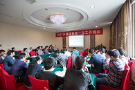
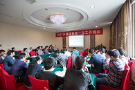

FAST软件架构
平台相关通信库：FAST软硬件通信接口与平台相关
FAST核心管理软件：提供硬件功能模块配套管理配置接口
FAST数据平面功能扩展软件：提供复杂网络处理功能的灵活扩展
配置管理软件：配置管理界面；南向接口适配
FAST(FPGA bAsed SDN swiTching)是一种以FPGA为转发平面核心的SDN交换机实现架构，其基本思想是可重构交换架构——将报文处理流程拆解成多个独立报文处理阶段，为每个阶段都建立相应的模块库，开发者根据需要自由选择处理模块，用于快速重构报文处理流水线。这种“离线重构”的方式能够满足多样化的SDN交换需求...
进入
 

为了促进我国软件定义网络（SDN）交流技术的发展，加强学术交流，中国计算机学会决定于2016年10月15日在湖南省长沙市，召开2016年“软件定义网络（SDN）交换技术”研讨会。会议将邀请学术界和工业界专家围绕SDN交换技术进行主题演讲，展示最新的开源研究成果，对最新的研究进展和发展趋势展开广泛深入的学术交流...
进入
SD-TS的主要目标是：1、面向未来网络创新技术规模试验验证，为创新网络实验提供多样化的定制场景和丰富的试验反馈；2、实现实验床服务与用户实验的解耦，兼容用户实验中不同类型的网络体系结构；3、与特网网络体系结构无关的大网实验，通过SD-TS重构实现实验站点经CNGI核心网隧道互联...
进入


平台相关通信库：FAST软硬件通信接口与平台相关
FAST核心管理软件：提供硬件功能模块配套管理配置接口
FAST数据平面功能扩展软件：提供复杂网络处理功能的灵活扩展
配置管理软件：配置管理界面；南向接口适配

平台相关逻辑：适配不同基于FPGA的软硬件平台，提供统一的平台接口
FAST基础模块库：FAST基础模块接口和功能定义不依赖于平台，实现也避免与平台相关
工程配置文件库：指定功能模块的连接组合；指定运行平台；指定资源和性能优化约束及目标